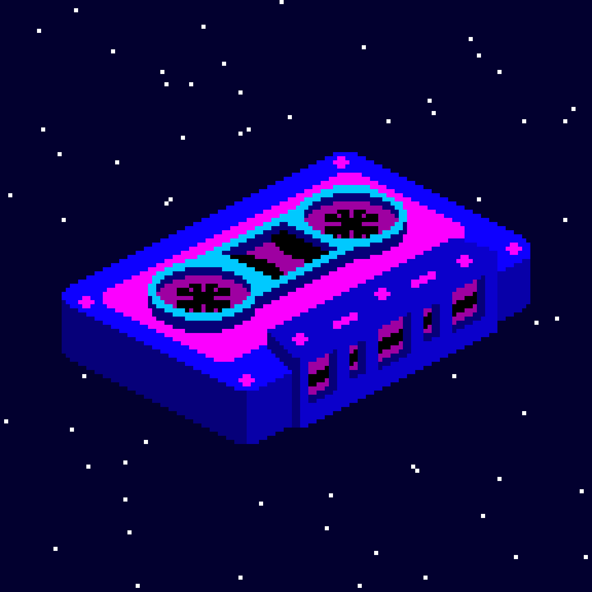
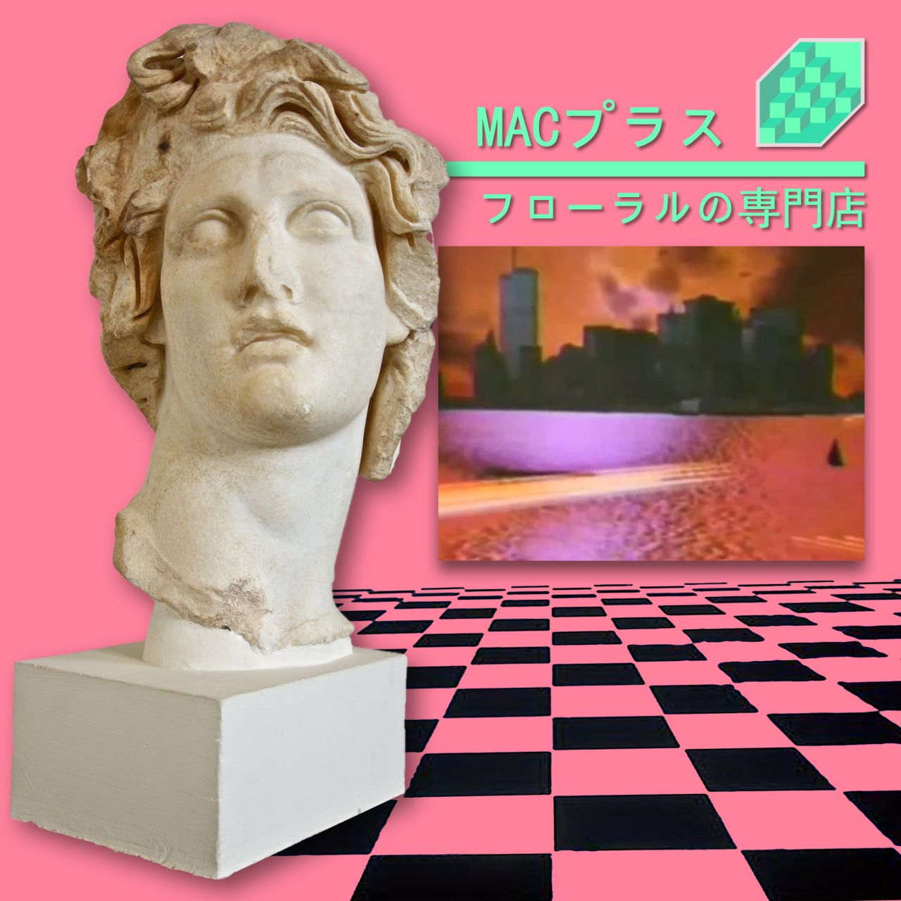
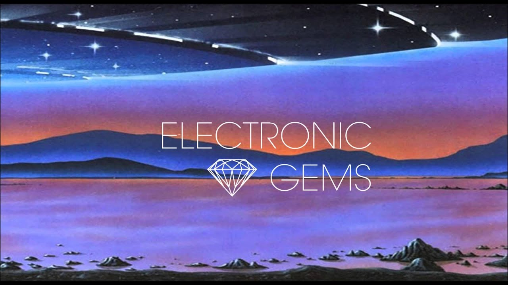

Videos/Musica
En esta seccion te recomendaremos musica Vaporwave, Aesthetic, etc.
Para mostrarte el genero como tal, proximamente y progresivamente se subiran videos de igual forma
relacionados, se recomienda el uso de audifonos con cada una de estas canciones, te pueden transmitir un toque nostalgico.
Que lo disfrutes!
¿Porque la musica en el Vaporwave?
Es la parte fundamental del genero vaporwave ya que de este nacio, si no haz visto
nuestra seccion de historia te recomendamos ampliamente leerla primero. La musica en el vaporwave es lo que comenzo dandole vida,
usando "samples" de distintas canciones, haciendo que estas suenen lento para causar un diferente sentimiento en las personas, de igual
no olvidar la importancia del arte visual, que usualmente te hace tener ese sentimiento nostalgico. Una buena cancion, lleva una excelente arte visual.
Canciones Recomendadas
Driver - Eye of truth

Macintosh Plus

Home - Resonance
Flyday Chinatown